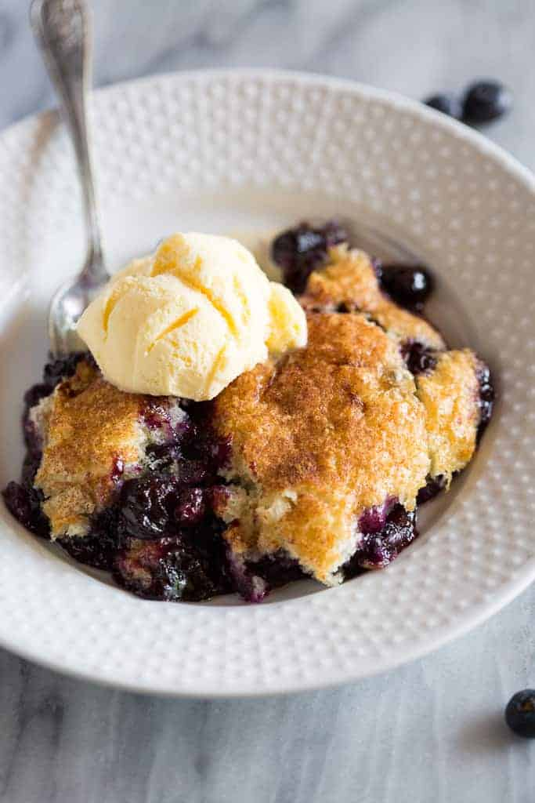

Bluebery Cobbler Recipe

Look at this delicious blueberry cobbler!
After you follow these directions,
you'll be able to make some too.
Ingredients:
- Fresh or frozen blueberries
- A little granulated sugar
- Lemon zest
- A few tablespoons of butter
- The batter: Flour, sugar, milk, baking powder, salt, and cinnamon.
Directions:
- Prepare your pan: Preheat your oven to 350 degrees F and
slice the butter into pieces. Add the butter to a 9 by 13 inch baking dish.
Place the pan in the oven while it preheats, allowing the butter to melt.
Once melted, remove the pan from the oven.
- Prepare the blueberries: Add blueberries, sugar and zest to a bowl
and stir to continue
- Prepare the batter: Mix the batter ingredients together: flour,
sugar, baking powder, and salt. Stir in the milk, just until combined.
Pour blueberries over melted butter in pan,
drizzle the batter over the top, and sprinkle with a little bit of cinnamon.
- Bake: Bake at 350 degrees for about 35-40 minutes,
or lightly until golden on top.
- Serve: Serve the cobbler warm from the oven with a scoop
of vanilla ice cream, if desired.
Back to Homepage